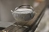

superconduction

Has synonym(s): superconduction
Definition: Superconductivity is a set of physical properties observed in certain materials where electrical resistance vanishes and magnetic fields are expelled from the material. Any material exhibiting these properties is a superconductor. Unlike an ordinary metallic conductor, whose resistance decreases gradually as its temperature is lowered, even down to near absolute zero, a superconductor has a characteristic critical temperature below which the resistance drops abruptly to zero. An electric current through a loop of superconducting wire can persist indefinitely with no power source.
Source: Wikipedia
Wikipedia Page (Something wrong with this association? Let us know.)
Wikidata Page (Something wrong with this association? Let us know.)